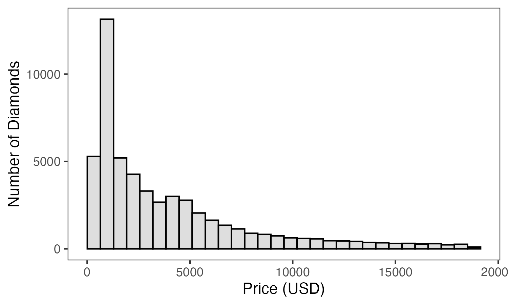

Week 9: November 6 2025
Exploratory Data Analysis
The diamonds dataset comes with ggplot 2. it contains measurements of ~54000 diamonds.
We have a column for price. This will be our key dependent variable that we want to understand.
a <- data %>%
ggplot(aes(x = price)) +
geom_histogram(alpha = 0.2, colour = "black") +
theme_bw() +
theme(panel.grid = element_blank()) +
labs(
x = "Price (USD)",
y = "Number of Diamonds"
)
ggsave("Figs/Price_hist.png", height = 3, width = 5, dpi = 300)
knitr::include_graphics("Figs/Price_hist.png")
Right-skewed distribution
Most diamonds cost < 5000 USD, and some diamonds cost a lot more, up to about 20000 USD.
Explore Predictors
b <- diamonds %>%
ggplot(aes(x = carat)) +
geom_histogram(alpha = 0.2, colour = "black") +
theme_bw() +
theme(panel.grid = element_blank()) +
labs(
x = "Carat",
y = "Number of Diamonds"
)
ggsave("Figs/Carat_hist.png", height = 3, width = 5, dpi = 300)
knitr::include_graphics("Figs/Carat_hist.png")
## # A tibble: 7 × 2
## color n
## <ord> <int>
## 1 D 6775
## 2 E 9797
## 3 F 9542
## 4 G 11292
## 5 H 8304
## 6 I 5422
## 7 J 2808c <- data %>%
group_by(color) %>%
summarise(
n = n()
) %>%
ggplot(aes(x = color, y = n)) +
geom_bar(stat = "identity", alpha = 0.2, colour = "black") +
theme_bw() +
theme(panel.grid = element_blank()) +
labs(
x = "Color",
y = "Number of Diamonds"
)
ggsave("Figs/Color_hist.png", height = 3, width = 5, dpi = 300)
knitr::include_graphics("Figs/Color_hist.png")
Simple Scatterplot
I’m going to choose carat as my predictor to start with, because I suspect that this will be closely related to the price.
d <- data %>%
ggplot(aes(x = carat, y = price)) +
geom_point(alpha = 0.05) +
geom_smooth(method = "lm", se = F, colour = "red") +
theme_bw() +
theme(panel.grid = element_blank())
ggsave("Figs/carat_price.png", height = 3, width = 5, dpi = 300)
knitr::include_graphics("Figs/carat_price.png")
Compute Simple Regression
There is a clear relationship between carat and price: larger diamonds are more expensive. Let’s start by making a simple regression modeling the relationship between size and price.
##
## Call:
## lm(formula = price ~ carat, data = data)
##
## Residuals:
## Min 1Q Median 3Q Max
## -18585.3 -804.8 -18.9 537.4 12731.7
##
## Coefficients:
## Estimate Std. Error t value Pr(>|t|)
## (Intercept) -2256.36 13.06 -172.8 <0.0000000000000002 ***
## carat 7756.43 14.07 551.4 <0.0000000000000002 ***
## ---
## Signif. codes: 0 '***' 0.001 '**' 0.01 '*' 0.05 '.' 0.1 ' ' 1
##
## Residual standard error: 1549 on 53938 degrees of freedom
## Multiple R-squared: 0.8493, Adjusted R-squared: 0.8493
## F-statistic: 3.041e+05 on 1 and 53938 DF, p-value: < 0.00000000000000022Carat accounts for 85% of variability in price (\(R^2\) = 0.85).
A 1-carat increase in diamond weight is associated with a $7756-dollar increase in price.
Multiple Regression
Try adding additional predictors in with carat to investigate whether they provide additional explantory power.
## # A tibble: 6 × 10
## carat cut color clarity depth table price x y z
## <dbl> <ord> <ord> <ord> <dbl> <dbl> <int> <dbl> <dbl> <dbl>
## 1 0.23 Ideal E SI2 61.5 55 326 3.95 3.98 2.43
## 2 0.21 Premium E SI1 59.8 61 326 3.89 3.84 2.31
## 3 0.23 Good E VS1 56.9 65 327 4.05 4.07 2.31
## 4 0.29 Premium I VS2 62.4 58 334 4.2 4.23 2.63
## 5 0.31 Good J SI2 63.3 58 335 4.34 4.35 2.75
## 6 0.24 Very Good J VVS2 62.8 57 336 3.94 3.96 2.48##
## Call:
## lm(formula = price ~ carat + clarity + cut + color, data = data)
##
## Residuals:
## Min 1Q Median 3Q Max
## -16813.5 -680.4 -197.6 466.4 10394.9
##
## Coefficients:
## Estimate Std. Error t value Pr(>|t|)
## (Intercept) -3710.603 13.980 -265.414 < 0.0000000000000002 ***
## carat 8886.129 12.034 738.437 < 0.0000000000000002 ***
## clarity.L 4217.535 30.831 136.794 < 0.0000000000000002 ***
## clarity.Q -1832.406 28.827 -63.565 < 0.0000000000000002 ***
## clarity.C 923.273 24.679 37.411 < 0.0000000000000002 ***
## clarity^4 -361.995 19.739 -18.339 < 0.0000000000000002 ***
## clarity^5 216.616 16.109 13.447 < 0.0000000000000002 ***
## clarity^6 2.105 14.037 0.150 0.881
## clarity^7 110.340 12.383 8.910 < 0.0000000000000002 ***
## cut.L 698.907 20.335 34.369 < 0.0000000000000002 ***
## cut.Q -327.686 17.911 -18.295 < 0.0000000000000002 ***
## cut.C 180.565 15.557 11.607 < 0.0000000000000002 ***
## cut^4 -1.207 12.458 -0.097 0.923
## color.L -1910.288 17.712 -107.853 < 0.0000000000000002 ***
## color.Q -627.954 16.121 -38.952 < 0.0000000000000002 ***
## color.C -171.960 15.070 -11.410 < 0.0000000000000002 ***
## color^4 21.678 13.840 1.566 0.117
## color^5 -85.943 13.076 -6.572 0.00000000005 ***
## color^6 -49.986 11.889 -4.205 0.00002620629 ***
## ---
## Signif. codes: 0 '***' 0.001 '**' 0.01 '*' 0.05 '.' 0.1 ' ' 1
##
## Residual standard error: 1157 on 53921 degrees of freedom
## Multiple R-squared: 0.9159, Adjusted R-squared: 0.9159
## F-statistic: 3.264e+04 on 18 and 53921 DF, p-value: < 0.00000000000000022Adding
clarity,color, andcutinto the model increases the \(R^2\) value to 0.91.This is 6% more variance accounted for than when we modeled only carat as the predictor.
But is that 6% improvement a significant improvement???????
Let’s formally test:
## Analysis of Variance Table
##
## Model 1: price ~ carat
## Model 2: price ~ carat + clarity + cut + color
## Res.Df RSS Df Sum of Sq F Pr(>F)
## 1 53938 129345695398
## 2 53921 72162776162 17 57182919236 2513.4 < 0.00000000000000022 ***
## ---
## Signif. codes: 0 '***' 0.001 '**' 0.01 '*' 0.05 '.' 0.1 ' ' 1- My second model is significantly better at capturing variance in
pricethan the first model.

Quadratic Model
##
## Call:
## lm(formula = price ~ poly(carat, 2), data = data)
##
## Residuals:
## Min 1Q Median 3Q Max
## -26350.0 -724.2 -35.9 445.8 12881.1
##
## Coefficients:
## Estimate Std. Error t value Pr(>|t|)
## (Intercept) 3932.800 6.631 593.1 <0.0000000000000002 ***
## poly(carat, 2)1 853889.595 1540.103 554.4 <0.0000000000000002 ***
## poly(carat, 2)2 37572.214 1540.103 24.4 <0.0000000000000002 ***
## ---
## Signif. codes: 0 '***' 0.001 '**' 0.01 '*' 0.05 '.' 0.1 ' ' 1
##
## Residual standard error: 1540 on 53937 degrees of freedom
## Multiple R-squared: 0.851, Adjusted R-squared: 0.851
## F-statistic: 1.54e+05 on 2 and 53937 DF, p-value: < 0.00000000000000022- Similar to the linear model above, the polynomial base model can account for 85% of variance in diamond price.
Let’s compare the simple polynomial model to the simple regression model:
## Analysis of Variance Table
##
## Model 1: price ~ carat
## Model 2: price ~ poly(carat, 2)
## Res.Df RSS Df Sum of Sq F Pr(>F)
## 1 53938 129345695398
## 2 53937 127934024108 1 1411671290 595.16 < 0.00000000000000022 ***
## ---
## Signif. codes: 0 '***' 0.001 '**' 0.01 '*' 0.05 '.' 0.1 ' ' 1- The model that involved a polynomial was significantly better at capturing variance in the price of the diamonds.
Multiple Regression with a Polynomial
##
## Call:
## lm(formula = price ~ poly(carat, 2) + cut + color + clarity,
## data = data)
##
## Residuals:
## Min 1Q Median 3Q Max
## -22942.8 -640.0 -187.3 416.4 10566.1
##
## Coefficients:
## Estimate Std. Error t value Pr(>|t|)
## (Intercept) 3362.045 9.488 354.345 < 0.0000000000000002 ***
## poly(carat, 2)1 977442.847 1317.069 742.135 < 0.0000000000000002 ***
## poly(carat, 2)2 30198.755 1171.539 25.777 < 0.0000000000000002 ***
## cut.L 680.759 20.223 33.662 < 0.0000000000000002 ***
## cut.Q -329.741 17.802 -18.523 < 0.0000000000000002 ***
## cut.C 184.461 15.462 11.930 < 0.0000000000000002 ***
## cut^4 -1.062 12.382 -0.086 0.9317
## color.L -1932.034 17.624 -109.624 < 0.0000000000000002 ***
## color.Q -657.281 16.063 -40.919 < 0.0000000000000002 ***
## color.C -172.049 14.979 -11.486 < 0.0000000000000002 ***
## color^4 31.405 13.761 2.282 0.0225 *
## color^5 -90.364 12.998 -6.952 0.00000000000364 ***
## color^6 -47.807 11.816 -4.046 0.00005222452368 ***
## clarity.L 4191.370 30.660 136.704 < 0.0000000000000002 ***
## clarity.Q -1897.378 28.762 -65.968 < 0.0000000000000002 ***
## clarity.C 966.831 24.587 39.323 < 0.0000000000000002 ***
## clarity^4 -374.152 19.624 -19.066 < 0.0000000000000002 ***
## clarity^5 231.114 16.021 14.426 < 0.0000000000000002 ***
## clarity^6 2.080 13.951 0.149 0.8815
## clarity^7 103.122 12.311 8.376 < 0.0000000000000002 ***
## ---
## Signif. codes: 0 '***' 0.001 '**' 0.01 '*' 0.05 '.' 0.1 ' ' 1
##
## Residual standard error: 1150 on 53920 degrees of freedom
## Multiple R-squared: 0.917, Adjusted R-squared: 0.9169
## F-statistic: 3.134e+04 on 19 and 53920 DF, p-value: < 0.00000000000000022## Analysis of Variance Table
##
## Model 1: price ~ carat + clarity + cut + color
## Model 2: price ~ poly(carat, 2) + cut + color + clarity
## Res.Df RSS Df Sum of Sq F Pr(>F)
## 1 53921 72162776162
## 2 53920 71284343343 1 878432819 664.45 < 0.00000000000000022 ***
## ---
## Signif. codes: 0 '***' 0.001 '**' 0.01 '*' 0.05 '.' 0.1 ' ' 1- The multiple regression including the polynomial term for
caratis significantly better at capturing variance in price than the strictly linear multiple regression model from above.
Bootstrap the Estimates
set.seed(994)
B <- 1000
boot_coeffs <- replicate(B, {
idx <- sample(nrow(data), replace = T)
coef(lm(price ~ carat, data = data[idx, ]))[2]
})
ggplot(data.frame(boot_coeffs), aes(boot_coeffs)) +
geom_histogram(alpha = 0.2, colour = "black") +
theme_bw() +
theme(panel.grid = element_blank())
The distribution of slopes is tightly centered around 7750, which is close to the original slope estimate.
There is not much range in the estimated slopes (min ~ 7500, max ~ 7800)
This reinforces the conclusion from the simple regression:
caratis a strong, robust predictor ofprice.
## 2.5% 97.5%
## 7705.957 7801.569- 95% of the bootstrapped slopes are between 7705 and 7801.
Principal Component Analysis
I will follow the same steps that we used for the penguins dataset analysis on Oct 23rd.
Explore via Histograms
## carat cut color clarity depth
## Min. :0.2000 Fair : 1610 D: 6775 SI1 :13065 Min. :43.00
## 1st Qu.:0.4000 Good : 4906 E: 9797 VS2 :12258 1st Qu.:61.00
## Median :0.7000 Very Good:12082 F: 9542 SI2 : 9194 Median :61.80
## Mean :0.7979 Premium :13791 G:11292 VS1 : 8171 Mean :61.75
## 3rd Qu.:1.0400 Ideal :21551 H: 8304 VVS2 : 5066 3rd Qu.:62.50
## Max. :5.0100 I: 5422 VVS1 : 3655 Max. :79.00
## J: 2808 (Other): 2531
## table price x y
## Min. :43.00 Min. : 326 Min. : 0.000 Min. : 0.000
## 1st Qu.:56.00 1st Qu.: 950 1st Qu.: 4.710 1st Qu.: 4.720
## Median :57.00 Median : 2401 Median : 5.700 Median : 5.710
## Mean :57.46 Mean : 3933 Mean : 5.731 Mean : 5.735
## 3rd Qu.:59.00 3rd Qu.: 5324 3rd Qu.: 6.540 3rd Qu.: 6.540
## Max. :95.00 Max. :18823 Max. :10.740 Max. :58.900
##
## z
## Min. : 0.000
## 1st Qu.: 2.910
## Median : 3.530
## Mean : 3.539
## 3rd Qu.: 4.040
## Max. :31.800
## - The varaibles are measured on different scales, we need to match them in order to run PCA.
Correlation Matrix
cor(a) %>%
melt() %>%
mutate(value = round(value,2)) %>%
ggplot(aes(x = Var1, y = Var2, fill = value, label = value)) +
geom_tile() +
geom_text(colour = "white")
Compute PCA
## Importance of components:
## PC1 PC2 PC3 PC4 PC5 PC6 PC7
## Standard deviation 2.1826 1.1340 0.83115 0.41684 0.20077 0.18151 0.11135
## Proportion of Variance 0.6806 0.1837 0.09869 0.02482 0.00576 0.00471 0.00177
## Cumulative Proportion 0.6806 0.8642 0.96294 0.98776 0.99352 0.99823 1.00000
## # A tibble: 7 × 2
## variable PC1
## <chr> <dbl>
## 1 x 0.453
## 2 carat 0.452
## 3 y 0.447
## 4 z 0.446
## 5 price 0.426
## 6 table 0.0995
## 7 depth -0.000916## # A tibble: 7 × 2
## variable PC2
## <chr> <dbl>
## 1 depth -0.731
## 2 table 0.675
## 3 z -0.0890
## 4 price -0.0353
## 5 carat -0.0347
## 6 x 0.00351
## 7 y 0.00216